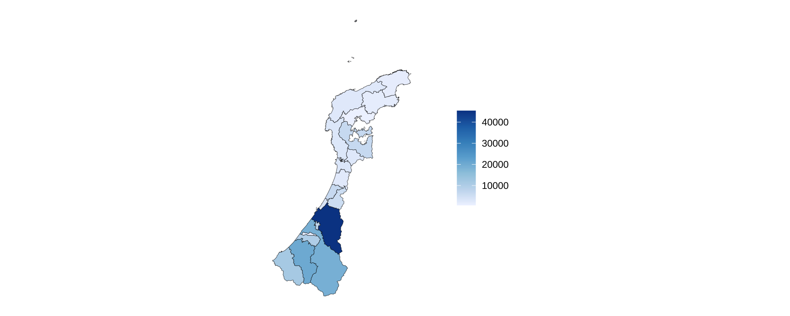
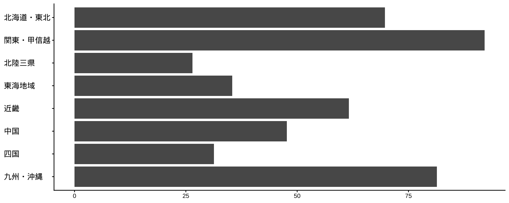

![]()
# Setupチャンクに書く
raw_data_d_2023 <- read_csv("data/SSDSE-D-2023.csv",
locale = locale(encoding = "CP932"))
raw_data_d_2021 <- read_csv("data/SSDSE-D-2021.csv",
locale = locale(encoding = "CP932"))
df_long_d_2023 <-
raw_data_d_2023 |>
select("SSDSE-D-2023", Prefecture, matches("^[A-Z]{2}[0-9]{2}$")) |> # 「MA01」「MB12」などのように、アルファベット2文字＋数字2桁 になっている列をまとめて選ぶ
select(-c(MA00, MB00, MC00, MD00, ME00, MF00)) |> # 複数の列を一括で削除するためにc()で囲む
pivot_longer(
# 横に並んでいるデータ（列）を、縦に並べ替える
cols = matches("^[A-Z]{2}[0-9]{2}$"), # 対象となる列（コード列）
names_to = "code", # 列名（MA01など）を「code」という列に入れる
values_to = "value"
) # 中の値を「value」という列に入れる
middle_category <-
df_long_d_2023 |>
filter(Prefecture == "都道府県") |>
select(code, category_middle = value)
df_long_cat_d_2023 <-
df_long_d_2023 |>
mutate(Prefecture = factor(Prefecture, levels = pref_levels)) |>
filter_out(Prefecture == "都道府県") |>
filter_out(`SSDSE-D-2023` == "男女の別") |>
drop_na(Prefecture) |>
left_join(middle_category, by = "code") |>
relocate(category_middle, .after = code) |>
mutate(
category_major = case_when(
substr(code, 1, 2) == "MB" ~ "学習・自己啓発・訓練",
substr(code, 1, 2) == "MC" ~ "スポーツ",
substr(code, 1, 2) == "MD" ~ "趣味・娯楽",
substr(code, 1, 2) == "ME" ~ "ボランティア",
substr(code, 1, 2) == "MF" ~ "旅行・行楽",
substr(code, 1, 2) == "MG" ~ "行動種別",
substr(code, 1, 2) == "MH" ~ "平均時刻",
TRUE ~ NA_character_
)
) |>
relocate(category_major, .after = code) |>
rename(都道府県 = Prefecture) |>
filter_out(`SSDSE-D-2023` == "0_総数") |>
separate(`SSDSE-D-2023`, into = c(NA, "性別"), sep = "_") |>
filter(性別 %in% c("男", "女")) |>
mutate(性別 = factor(性別, levels = c("男", "女"))) |>
filter_out(都道府県 == "全国") |>
drop_na(都道府県) |>
mutate(year = 2021, .before = 性別) |>
mutate(data_file_name = "SSDSE-D-2023", .before = year) # 同種の複数データを結合する際に識別できるようファイル名を追加
df_long_d_2021 <-
raw_data_d_2021 |>
select("SSDSE-D-2021", Prefecture, matches("^[A-Z]{2}[0-9]{2}$")) |> # 「MA01」「MB12」などのように、アルファベット2文字＋数字2桁 になっている列をまとめて選ぶ
select(-c(MA00, MB00, MC00, MD00, ME00, MF00)) |> # 複数の列を一括で削除するためにc()で囲む
pivot_longer(
# 横に並んでいるデータ（列）を、縦に並べ替える
cols = matches("^[A-Z]{2}[0-9]{2}$"), # 対象となる列（コード列）
names_to = "code", # 列名（MA01など）を「code」という列に入れる
values_to = "value"
) # 中の値を「value」という列に入れる
middle_category_2021 <-
df_long_d_2021 |>
filter(Prefecture == "都道府県") |>
select(code, category_middle = value)
df_long_cat_d_2021 <-
df_long_d_2021 |>
mutate(Prefecture = factor(Prefecture, levels = pref_levels)) |>
filter_out(Prefecture == "都道府県") |>
filter_out(`SSDSE-D-2021` == "男女の別") |>
drop_na(Prefecture) |>
left_join(middle_category, by = "code") |>
relocate(category_middle, .after = code) |>
mutate(
category_major = case_when(
substr(code, 1, 2) == "MB" ~ "学習・自己啓発・訓練",
substr(code, 1, 2) == "MC" ~ "スポーツ",
substr(code, 1, 2) == "MD" ~ "趣味・娯楽",
substr(code, 1, 2) == "ME" ~ "ボランティア",
substr(code, 1, 2) == "MF" ~ "旅行・行楽",
substr(code, 1, 2) == "MG" ~ "行動種別",
substr(code, 1, 2) == "MH" ~ "平均時刻",
TRUE ~ NA_character_
)
) |>
relocate(category_major, .after = code) |>
rename(都道府県 = Prefecture) |>
filter_out(`SSDSE-D-2021` == "0_総数") |>
separate(`SSDSE-D-2021`, into = c(NA, "性別"), sep = "_") |>
filter(性別 %in% c("男", "女")) |>
mutate(性別 = factor(性別, levels = c("男", "女"))) |>
filter_out(都道府県 == "全国") |>
drop_na(都道府県) |>
mutate(year = 2016, .before = 性別) |>
mutate(data_file_name = "SSDSE-D-2021", .before = year) # 同種の複数データを結合する際に識別できるようファイル名を追加 RとQuartoではじめるデータサイエンス
#6 可視化(3)と出力
0. 本日の目標
本日の目標
- 応用的な内容（地理空間データや、差分のための行集計）に触れてみる
- 図を書き出せるようになる
- 出力形式を変えられるようになる
- レポート課題に備え、何をすべきかをしっかりと理解する
- ZIPファイル形式で保存できるようになる
Ⅰ. 前回の振り返り
授業の感想
「データのタイトル
<-」というコードを、グラフや表を作る前に挿入するということが 重要だと思いました。（楠さん）
前より授業についていくことができました。家で課題をやるとき codex ai を使って見たらどこで間違えているか教えるので学習に使いながら、講義を聞くと前より上手くいったと感じた。（Mandalさん）
前回の積み残し
- Meiryoを指定すると警告が出るため、一旦、以下のコードを削除して下さい
# ggplot theme_classicのフォント設定 ----
ggplot2::theme_set(
theme_classic(base_family = "Meiryo") +
theme_sub_axis_bottom(
title = element_text(size = 7, margin = margin(t = 8)),
text = element_text(size = 6.5)
) +
theme_sub_axis_left(
title = element_text(size = 7, margin = margin(r = 8)),
text = element_text(size = 7, hjust = 0)
) +
theme_sub_legend(
position = "bottom",
margin = margin(t = -6),
key.size = unit(4, "mm")
)
)- Ⅳ. チャンクオプション > YAML設定から
Ⅱ. 行結合
行結合
bind_rows()関数
- 列名をそろえて、行方向に追加する
- 同じ列名をもつデータを追加するときに使う
- Cf.
left_join()は列方向の結合
行結合
- SSDSE-D-2021のデータフレームを作成（SSDSE-D-2023もあらためて作成）
- 第4週教材と同じ要領で書く（2023を2021に変える）だけだが、行結合を前提とする場合、新たにyearとdata_file_nameを追加した方がいい。以下のコードをSetupチャンクには貼り付ける
- df_long_cat_d_2021とdf_long_cat_d_2023の二つのデータフレームができる
行結合
- df_long_cat_d_2021とdf_long_cat_d_2023を結合
- 先のSetupチャンクのコードに続けて貼り付け
# Setupチャンクに書く
df_long_cat_d_all <- bind_rows(df_long_cat_d_2021, df_long_cat_d_2023)# A tibble: 6 × 8
data_file_name year 性別 都道府県 code category_major category_middle value
<chr> <dbl> <fct> <fct> <chr> <chr> <chr> <chr>
1 SSDSE-D-2021 2016 男 北海道 MB01 学習・自己啓発・訓練…… 外国語 9.9
2 SSDSE-D-2021 2016 男 北海道 MB02 学習・自己啓発・訓練…… 商業実務・ビジネス関係(総数… 16.7
3 SSDSE-D-2021 2016 男 北海道 MB03 学習・自己啓発・訓練…… 介護関係 2.1
4 SSDSE-D-2021 2016 男 北海道 MB04 学習・自己啓発・訓練…… 家政・家事(料理・裁縫・家庭… 7.1
5 SSDSE-D-2021 2016 男 北海道 MB05 学習・自己啓発・訓練…… 人文・社会・自然科学(歴史・… 7.8
6 SSDSE-D-2021 2016 男 北海道 MB06 学習・自己啓発・訓練…… 芸術・文化 7.2 差分の算出
- 先のSetupチャンクのコードに続けて貼り付け
- 引き算（2021から2016を引く）しやすいように
pivot_wider()で横持ちデータに変換
# Setupチャンクに書く
df_filtered <- # 2016年にはあって、2021にはないデータを除去
df_long_cat_d_all |>
group_by(
性別,
都道府県,
code,
category_major,
category_middle
) |>
filter(
n_distinct(year) == 2
) |>
ungroup()
df_diff <- # 差分を算出
df_filtered |>
pivot_wider(
id_cols = c(
性別,
都道府県,
code,
category_major,
category_middle
),
names_from = year,
values_from = value
) |>
mutate(
`2016` = as.numeric(`2016`),
`2021` = as.numeric(`2021`),
diff = `2021` - `2016`,
change_rate = (`2021` - `2016`) / `2016`,
index = `2021` / `2016` * 100 # 2016年=100とした指数
)差分のプロット
実数

- ほとんどの都道府県で、男性の「野球(キャッチボールを含む)」の時間が縮小している（単独のデータだけでは見えなかった発見）
差分のプロット
増減率
- 増減率を用いると、2016年から2021年にかけての変化を把握しやすい
df_diff |>
filter_out(都道府県 == "全国") |>
filter(category_major == "スポーツ") |>
filter(category_middle == "野球(キャッチボールを含む)") |>
filter(性別 == "男") |>
drop_na() |>
mutate(都道府県 = reorder(都道府県, -change_rate)) |> # 値の多い順に並べる
ggplot(aes(x = 都道府県, y = change_rate)) +
geom_col() +
scale_y_continuous(labels = scales::label_percent()) +
labs(x = NULL, y = NULL) +
coord_flip()
差分のプロット
指数
- 2016年を100とした指数（index）を用いると、2016年から2021年にかけての増減を把握しやすい（今回は2点しか取っていないが、さらに多くの時点がある場合、指数は有益）

Ⅲ. 地図データ
地図データ
地理空間データ
sf
- Rで地理空間データ（地図データ）を扱うための標準的なパッケージ
- 国際標準の地理データ形式（Simple Features）に準拠
- 通常のデータフレームに、点、線、面（ポリゴン）などの地理情報を追加したものを扱えるようにする
Noteパッケージ
sfをインストールし、読み込む
install.packages("sf") / library(sf)
地図データ
地図データ
rnaturalearth：関数本体
rnaturalearthdata：地図データ本体
- 世界各国の地理データ（国境・行政区域・河川・海岸線など）を簡単に取得できる Rパッケージ
- 公開地図データNatural Earthを、Rから直接利用できるようにしたもの
Noteパッケージ
rnaturalearthとrnaturalearthdataをインストールし、読み込む
install.packages("rnaturalearth") / library(rnaturalearth) install.packages("rnaturalearthdata") / library(rnaturalearthdata)
都道府県単位の日本地図
「野球（キャッチボールを含む）」に費やす時間の可視化（地図）
# 日本地図取得
map_japan <- ne_states("japan") |> # 日本の都道府県地図データを取得 ne_statesはrnaturalearthの関数
select(iso_3166_2, name_ja, name_en) # name_jaだけでも問題はないが、念の為、iso_3166_2や name_enも残す
# df_long_catを加工してbaseballと性別（例示は男）だけにする
df_baseball <-
df_long_cat |>
filter_out(都道府県 == "全国") |>
filter(category_major == "スポーツ") |>
filter(category_middle == "野球(キャッチボールを含む)") |>
drop_na() |>
filter(性別 =="男") |>
mutate(value = as.numeric(value))
# 上記の二つのデータフレームを結合
map_japan |>
left_join(
df_baseball,
by = c("name_ja" = "都道府県") # データフレーム間で列名が異なる場合の処理方法
) |>
ggplot() +
geom_sf(aes(fill = value)) + # valueで塗り分ける
scale_fill_distiller( # 数値の大小を、連続的な色の濃淡で表現するための関数
palette = "Blues", # 色の指定
direction = 1 # 値が大きいものを濃く、その逆を薄くする
) +
labs(fill = NULL) + # 凡例を削除
theme_void() # x軸とy軸の経度と緯度を削除
都道府県単位の日本地図
「野球（キャッチボールを含む）」に費やす時間の変化（指数）の可視化（地図）
# 日本地図取得
map_japan <- ne_states("japan") |> # 日本の都道府県地図データを取得 ne_statesはrnaturalearthの関数
select(iso_3166_2, name_ja, name_en) # name_jaだけでも問題はないが、念の為、iso_3166_2や name_enも残す
df_baseball_diff <-
df_diff |>
filter_out(都道府県 == "全国") |>
filter(category_major == "スポーツ") |>
filter(category_middle == "野球(キャッチボールを含む)") |>
filter(性別 == "男") |>
drop_na()
# 上記の二つのデータフレームを結合
map_japan |>
left_join(
df_baseball_diff,
by = c("name_ja" = "都道府県") # データフレーム間で列名が異なる場合の処理方法
) |>
ggplot() +
geom_sf(aes(fill = index)) + # valueで塗り分ける
scale_fill_gradient2(
low = "blue", # 100未満
mid = "white", # 100
high = "red", # 100超
midpoint = 100
) +
labs(fill = NULL) + # 凡例を削除
theme_void() # x軸とy軸の経度と緯度を削除
北陸3県の日本地図
「野球（キャッチボールを含む）」に費やす時間の可視化（地図）
# 日本地図取得
map_japan <- ne_states("japan") |> # 日本の都道府県地図データを取得 ne_statesはrnaturalearthの関数
select(iso_3166_2, name_ja, name_en) # name_jaだけでも問題はないが、念の為、iso_3166_2や name_enも残す
# df_long_catを加工してbaseballと性別（例示は男）だけにする
df_baseball <-
df_long_cat |>
filter_out(都道府県 == "全国") |>
filter(category_major == "スポーツ") |>
filter(category_middle == "野球(キャッチボールを含む)") |>
drop_na() |>
filter(性別 =="男") |>
mutate(value = as.numeric(value))
hokuriku<- c("石川県", "富山県", "福井県")
# 上記の二つのデータフレームを結合
map_japan |>
filter(name_ja %in% hokuriku) |>
left_join(
df_baseball,
by = c("name_ja" = "都道府県") # データフレーム間で列名が異なる場合の処理方法
) |>
ggplot() +
geom_sf(aes(fill = value)) + # valueで塗り分ける
scale_fill_distiller( # 数値の大小を、連続的な色の濃淡で表現するための関数
palette = "Blues", # 色の指定
direction = 1 # 値が大きいものを濃く、その逆を薄くする
) +
labs(fill = NULL) + # 凡例を削除
theme_void() # x軸とy軸の経度と緯度を削除
国境・河川・湖の地図のプロット
- rnaturalearthの地理データの利用
モンゴルの地図に地理データを乗せる
mongolia <- ne_countries(
country = "mongolia",
returnclass = "sf"
)
rivers <- ne_download(
scale = 10,
type = "rivers_lake_centerlines",
category = "physical",
returnclass = "sf"
) |>
st_make_valid()
rivers_mg <- st_intersection(
rivers,
st_union(mongolia)
)
lakes <- ne_download(
scale = 10,
type = "lakes",
category = "physical",
returnclass = "sf"
) |>
st_make_valid()
lakes_mg <- st_intersection(
lakes,
st_union(mongolia)
)
cities <- ne_download(
scale = 10,
type = "populated_places",
category = "cultural",
returnclass = "sf"
)
ulaanbaatar <- cities |>
filter(NAME == "Ulaanbaatar")
ggplot() +
geom_sf(data = mongolia,
fill = "cornsilk",
color = "gray40") +
geom_sf(
data = lakes_mg,
fill = "skyblue",
color = NA
) +
geom_sf(data = rivers_mg,
color = "skyblue") +
geom_sf(data = ulaanbaatar,
size = 3,
color = "red") +
theme_void()
市町村単位の日本地図
jpndistrict
- 日本の都道府県・市区町村の地図データを、sf形式で簡単に取得できるRパッケージ
- パッケージがCRANにおいてないため、
install.packagesが使えない - パッケージ
remotesを利用。以下のコードをConsoleに入力して実行
- パッケージがCRANにおいてないため、
install.packages("remotes")
remotes::install_github("uribo/jpndistrict")
市町村単位の日本地図
石川県内の第2次産業就業者数の可視化（市町村別の地図・実数）
準備
- 市町村単位のデータ（SSDSE-A-2025）を取得し、dataフォルダに入れる
- 以下のコードをSetup Chunkに追加する
# データ読み込み -----
raw_data_a <- read_csv(
"data/SSDSE-A-2025.csv", # ファイル名の指定は各自調整下さい
locale = locale(encoding = "CP932")
)
year_raw_a <-
raw_data_a |>
slice(1)
code_name_a <-
raw_data_a |>
slice(2) |>
pivot_longer(
cols = -c(`SSDSE-A-2025`, Prefecture, Municipality),
names_to = "code",
values_to = "code_name"
) |>
select(code, code_name) |>
filter(code <= "J250302")
code_name_a <-
code_name_a |>
slice(1:match("J250302", code))
code_year_a <-
year_raw_a |>
pivot_longer(
cols = -c(`SSDSE-A-2025`, Prefecture, Municipality),
names_to = "code",
values_to = "year"
) |>
select(code, year)
tmp_df_a <-
raw_data_a |>
slice(-c(1, 2)) |>
pivot_longer(
cols = -c(`SSDSE-A-2025`, Prefecture, Municipality),
names_to = "code",
values_to = "value"
) |>
filter_out(Prefecture == "都道府県") |>
rename(市区町村コード = `SSDSE-A-2025`) |>
mutate(市区町村コード = str_remove(市区町村コード, "^R")) # sfデータと結合するため、先頭のRを削除
df_a_2025 <-
tmp_df_a |>
left_join(code_name_a, by = "code") |>
left_join(code_year_a, by = "code") |>
relocate(code_name, year, .after = code) |>
mutate(data_file_name = "SSDSE-A-2025", .before = 市区町村コード) |> # 同種の複数データを結合する際に識別できるようファイル名を追加
mutate(value = as.numeric(value))市町村単位の日本地図
ishikawa <-
jpn_pref(pref = 17, district = TRUE) |> # pref = 17 は「石川県」を意味するコード
left_join(df_a_2025, by = c("city_code" = "市区町村コード")) # district = TRUE にすると、市区町村レベルの地図になる
ishikawa |>
filter(code_name == "第２次産業就業者数") |> # 「第２次産業就業者数」だけを取り出す
ggplot() +
geom_sf(aes(fill = value)) + # sf（地図データ）を描画。fill = value によって、値に応じて色を塗り分ける
scale_fill_distiller( # 数値の大小を、連続的な色の濃淡で表現するための関数
palette = "Blues", # 色の指定
direction = 1 # 値が大きいものを濃く、その逆を薄くする
) +
labs(fill = NULL) +
theme_void() +
theme(
legend.position = "right",
legend.margin = margin(l = 30), # 地図と凡例の位置を調整
plot.margin = margin(5.5, 20, 5.5, 5.5)
)
市町村単位の日本地図
石川県内の第2次産業就業者数の可視化（市町村別の地図・比率）
ishikawa_wide <- ishikawa |>
select(city, code_name, value) |>
pivot_wider(
names_from = code_name,
values_from = value
)
ishikawa_wide |>
select(city, `第２次産業就業者数`, 総人口) |>
mutate(
比率 = `第２次産業就業者数` / 総人口
) |>
ggplot() +
geom_sf(aes(fill = 比率)) + # sf（地図データ）を描画。fill = value によって、値に応じて色を塗り分ける
scale_fill_distiller( # 数値の大小を、連続的な色の濃淡で表現するための関数
palette = "Blues", # 色の指定
direction = 1 # 値が大きいものを濃く、その逆を薄くする
) +
labs(fill = NULL) +
theme_void() +
theme(
legend.position = "right",
legend.margin = margin(l = 30), # 地図と凡例の位置を調整
plot.margin = margin(5.5, 20, 5.5, 5.5)
)
地図データ
地図データの有効活用例
地域ブロック
- 47都道府県の比較ではなく、地域ブロックごとに比較したい場合
- 「地域ブロック」列を作る
df_long_cat <-
df_long_cat |>
mutate(
地域ブロック = case_when(
都道府県 %in% c("北海道", "青森県", "岩手県", "宮城県",
"秋田県", "山形県", "福島県") ~ "北海道・東北",
都道府県 %in% c("茨城県", "栃木県", "群馬県",
"埼玉県", "千葉県", "東京都", "神奈川県",
"新潟県", "山梨県", "長野県") ~ "関東・甲信越",
都道府県 %in% c("富山県", "石川県", "福井県") ~ "北陸三県",
都道府県 %in% c("岐阜県", "静岡県", "愛知県", "三重県") ~ "東海地域",
都道府県 %in% c("滋賀県", "京都府",
"大阪府", "兵庫県", "奈良県", "和歌山県") ~ "近畿",
都道府県 %in% c("鳥取県", "島根県", "岡山県",
"広島県", "山口県") ~ "中国",
都道府県 %in% c("徳島県", "香川県", "愛媛県", "高知県") ~ "四国",
都道府県 %in% c("福岡県", "佐賀県", "長崎県", "熊本県",
"大分県", "宮崎県", "鹿児島県", "沖縄県") ~ "九州・沖縄",
.default = NA
),
.before = 都道府県
) |>
mutate(
地域ブロック = factor(
地域ブロック,
levels = c(
"北海道・東北",
"関東・甲信越",
"北陸三県",
"東海地域",
"近畿",
"中国",
"四国",
"九州・沖縄"
)
)
)
df_long_cat |>
filter(category_major == "スポーツ") |>
filter(category_middle == "野球(キャッチボールを含む)") |>
filter(性別 == "男") |>
drop_na() |>
mutate(value = as.numeric(value)) |>
group_by(地域ブロック) |>
summarise(
value_sum = sum(value)
) |>
mutate(地域ブロック = fct_rev(地域ブロック)) |> # 都道順にしたい場合
# mutate(地域ブロック = reorder(地域ブロック, value)) |> # 値の多い順に並べる場合
ggplot(aes(x = 地域ブロック, y = value_sum)) +
geom_col() +
labs(x = NULL, y = NULL) +
coord_flip()
Ⅳ. 図の書き出し
図の書き出し
ggsave()関数
- 特定の図を別途、プロットしなければならない場合がある
- 教員の指示；学会の指定
- ポイント：代入したオブジェクトを
ggsave()に渡す - 準備：OSで、figuresフォルダを作成する
- 出力結果はフォルダを参照
p <-
penguins |>
drop_na(bill_len, bill_dep) |>
ggplot(aes(x = bill_len, y = bill_dep, colour = species)) +
geom_point() +
labs(
x = "くちばし長 (mm)",
y = "くちばし深さ (mm)",
colour = "種別"
) +
theme(
axis.title = element_text(size = 16),
axis.text = element_text(size = 14)
)
ggsave(
"figures/plot_scatter.png", # 保存先とファイル名を指定
plot = p, # プロットするオブジェクトを指定
width = 6, # 横サイズ（インチ）
height = 4.5, # 縦サイズ（インチ）
units = "in",
dpi = 150, # 1インチあたりの画素数（150で十分）
device = ragg::agg_png # 高品質なPNG画像として保存（日本語文字を綺麗に描画するなど）
)Ⅴ. 出力形態の変更
出力形態の変更
方法
- YAMLのformatを変更
- Presentations
- Revealjs (HTML); PowerPoint (Office); Beamer (PDF)
- Documents
- HTML; PDF; MS Word; Typst
Googleドライブにデモファイル（sample_format.zip）を置いておきます
PowerPoint/MS Word出力は手軽に共有・編集しやすい一方、revealjs はCSSによる細かなデザイン調整がしやすいです
Ⅵ. レポートの準備
レポートの準備
- 集計・分析に用いるデータをダウンロード
- 新しいquartoファイルを作成する
- 出力形態を選び、YAMLに反映させる
- Setup Chunkを作成し、データとパッケージを読み込み、また、execute設定とggplotのグローバル設定を追加する
- SSDSEデータを用いる場合は、前処理のコードを利用（Setup Chunkに貼り付け）する（パスやファイル名は各自調整すること）
- 必要に応じてデータを加工
- 図をプロット
- 説明などを文章にまとめる
- 提出のために、フォルダごとZIPファイルにまとめる
Googleドライブにデモファイル（sample_report.zip）を置いておきます
レポートの準備
ZIPファイル
- ファイルやフォルダをまとめ、容量を小さくする（圧縮する）仕組み（ファイル形式）
方法
Ⅶ. 次回の授業と宿題
次回の授業と宿題
次回：5月27日（水）
テーブル
- テーブル出力
- クロス集計表
- 記述統計量
- レポート課題の準備・相談
次回の授業と宿題
宿題
- 授業の感想：
- 回答先：Google Forms
- 締め切り：5月22日（金）23時59分
演習：
- 内容：レポート課題のドラフト（できたところまで構いません）
- ファイル：ZIPファイル
- ファイル名：どこかに氏名を特定できる文字を入れて下さい
- 例：kariya.zip
- 提出先：dropbox
- 締め切り：5月25日（月）23時59分